import numpy as np
import pandas as pd
import matplotlib.pyplot as plt
import tensorflow as tf
from tensorflow import kerasModul 8 Praktikum Sains Data: Deep Learning dengan Keras, Regresi dan Klasifikasi Gambar
Kembali ke Sains Data
Perceptron, revisited: selain Sequential API
Di pertemuan sebelumnya, kita telah menyusun perceptron menggunakan Sequential API seperti berikut (ada dua cara yang ekuivalen):
# langsung menentukan semua layer di awal, dengan memasukkan list
model0 = keras.Sequential(
[
keras.layers.InputLayer(input_shape = (2,)),
keras.layers.Dense(units = 1, activation = keras.activations.sigmoid)
]
)# menambahkan layer secara berangsur-angsur
model0 = keras.Sequential()
model0.add(keras.layers.InputLayer(input_shape = (2,)))
model0.add(keras.layers.Dense(units = 1, activation = keras.activations.sigmoid))Sequential API sebenarnya cukup terbatas: tiap layer harus berurutan satu sama lain, dan hubungan yang ada hanyalah antar pasangan dua layer yang bersebelahan.
Untuk model-model yang kita pelajari di mata kuliah Sains Data, sebenarnya Sequential API sudah cukup. Namun, kalau kalian pelajari lebih lanjut tentang neural network / deep learning, kalian akan bertemu dengan arsitektur aneh yang tidak bisa langsung disusun dengan Sequential API.
Contohnya, ada yang namanya skip connection, yaitu suatu layer terhubung dengan layer lain yang agak jauh darinya:

Sumber gambar: Aggarwal (2018) hal. 348
(Skip connection akan kalian temui kalau mempelajari residual network, yaitu arsitektur ResNet dan variasinya, yang sudah sangat di luar cakupan materi mata kuliah Sains Data.)
Untuk itu, diperlukan API selain Sequential, yaitu bisa dengan Functional API atau dengan Subclassing API. Agar kalian lebih mengenal Keras, kita akan mencoba membuat perceptron menggunakan dua API lainnya tersebut.
Kita bisa uji coba dengan dataset yang sama seperti di pertemuan sebelumnya: titik_negatif_positif.csv
df = pd.read_csv("./titik_negatif_positif.csv", dtype="float32")inputs_df = df.drop(columns=["kelas"])
targets_df = df[["kelas"]]inputs_arr = inputs_df.to_numpy()
targets_arr = targets_df.to_numpy()Functional API
Ide dari Functional API adalah menyusun tiap layer dan hubungan antar layer sebagai komposisi fungsi.
Untuk Functional API, daripada keras.layers.InputLayer, gunakan keras.layers.Input
m1_input = keras.layers.Input(shape = (2,))
m1_layer1_func = keras.layers.Dense(units = 1, activation = keras.activations.sigmoid)
m1_layer1_out = m1_layer1_func(m1_input) # seperti komposisi fungsi
model1 = keras.Model(inputs=m1_input, outputs=m1_layer1_out, name="model1")model1.summary()Model: "model1"
_________________________________________________________________
Layer (type) Output Shape Param #
=================================================================
input_3 (InputLayer) [(None, 2)] 0
dense_2 (Dense) (None, 1) 3
=================================================================
Total params: 3
Trainable params: 3
Non-trainable params: 0
_________________________________________________________________keras.utils.plot_model(
model1,
show_shapes = True,
show_layer_activations = True,
to_file = "keras_functional_model1.png"
)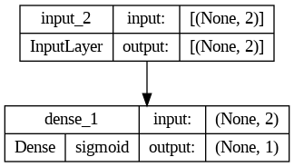
Sisanya (compile lalu fit) sama dengan Sequential API
model1.compile(
optimizer = keras.optimizers.SGD(learning_rate = 0.01),
loss = keras.losses.BinaryCrossentropy(),
metrics = [keras.metrics.BinaryAccuracy()]
)history1 = model1.fit(inputs_arr, targets_arr, epochs=100, validation_split=0.2)Epoch 1/100
50/50 [==============================] - 4s 31ms/step - loss: 1.2000 - binary_accuracy: 0.6144 - val_loss: 2.1506 - val_binary_accuracy: 0.0775
Epoch 2/100
50/50 [==============================] - 0s 4ms/step - loss: 0.6425 - binary_accuracy: 0.6837 - val_loss: 1.0554 - val_binary_accuracy: 0.3575
Epoch 3/100
50/50 [==============================] - 0s 4ms/step - loss: 0.3413 - binary_accuracy: 0.8344 - val_loss: 0.5549 - val_binary_accuracy: 0.7150
Epoch 4/100
50/50 [==============================] - 0s 5ms/step - loss: 0.2141 - binary_accuracy: 0.9406 - val_loss: 0.3460 - val_binary_accuracy: 0.8975
Epoch 5/100
50/50 [==============================] - 0s 5ms/step - loss: 0.1576 - binary_accuracy: 0.9800 - val_loss: 0.2475 - val_binary_accuracy: 0.9550
Epoch 6/100
50/50 [==============================] - 1s 10ms/step - loss: 0.1277 - binary_accuracy: 0.9900 - val_loss: 0.1938 - val_binary_accuracy: 0.9675
Epoch 7/100
50/50 [==============================] - 0s 7ms/step - loss: 0.1092 - binary_accuracy: 0.9912 - val_loss: 0.1604 - val_binary_accuracy: 0.9775
Epoch 8/100
50/50 [==============================] - 0s 5ms/step - loss: 0.0964 - binary_accuracy: 0.9931 - val_loss: 0.1381 - val_binary_accuracy: 0.9850
Epoch 9/100
50/50 [==============================] - 0s 6ms/step - loss: 0.0870 - binary_accuracy: 0.9944 - val_loss: 0.1221 - val_binary_accuracy: 0.9850
Epoch 10/100
50/50 [==============================] - 0s 5ms/step - loss: 0.0796 - binary_accuracy: 0.9950 - val_loss: 0.1101 - val_binary_accuracy: 0.9900
Epoch 11/100
50/50 [==============================] - 0s 4ms/step - loss: 0.0737 - binary_accuracy: 0.9950 - val_loss: 0.1007 - val_binary_accuracy: 0.9900
Epoch 12/100
50/50 [==============================] - 1s 11ms/step - loss: 0.0688 - binary_accuracy: 0.9969 - val_loss: 0.0932 - val_binary_accuracy: 0.9900
Epoch 13/100
50/50 [==============================] - 0s 7ms/step - loss: 0.0647 - binary_accuracy: 0.9969 - val_loss: 0.0870 - val_binary_accuracy: 0.9900
Epoch 14/100
50/50 [==============================] - 0s 5ms/step - loss: 0.0611 - binary_accuracy: 0.9975 - val_loss: 0.0818 - val_binary_accuracy: 0.9900
Epoch 15/100
50/50 [==============================] - 0s 8ms/step - loss: 0.0581 - binary_accuracy: 0.9975 - val_loss: 0.0774 - val_binary_accuracy: 0.9900
Epoch 16/100
50/50 [==============================] - 0s 9ms/step - loss: 0.0554 - binary_accuracy: 0.9975 - val_loss: 0.0736 - val_binary_accuracy: 0.9900
Epoch 17/100
50/50 [==============================] - 0s 9ms/step - loss: 0.0530 - binary_accuracy: 0.9975 - val_loss: 0.0703 - val_binary_accuracy: 0.9925
Epoch 18/100
50/50 [==============================] - 0s 8ms/step - loss: 0.0508 - binary_accuracy: 0.9975 - val_loss: 0.0674 - val_binary_accuracy: 0.9925
Epoch 19/100
50/50 [==============================] - 1s 11ms/step - loss: 0.0489 - binary_accuracy: 0.9969 - val_loss: 0.0649 - val_binary_accuracy: 0.9925
Epoch 20/100
50/50 [==============================] - 0s 5ms/step - loss: 0.0472 - binary_accuracy: 0.9969 - val_loss: 0.0626 - val_binary_accuracy: 0.9925
Epoch 21/100
50/50 [==============================] - 0s 3ms/step - loss: 0.0456 - binary_accuracy: 0.9969 - val_loss: 0.0605 - val_binary_accuracy: 0.9925
Epoch 22/100
50/50 [==============================] - 0s 6ms/step - loss: 0.0441 - binary_accuracy: 0.9969 - val_loss: 0.0586 - val_binary_accuracy: 0.9950
Epoch 23/100
50/50 [==============================] - 0s 3ms/step - loss: 0.0428 - binary_accuracy: 0.9969 - val_loss: 0.0569 - val_binary_accuracy: 0.9950
Epoch 24/100
50/50 [==============================] - 0s 6ms/step - loss: 0.0416 - binary_accuracy: 0.9969 - val_loss: 0.0553 - val_binary_accuracy: 0.9950
Epoch 25/100
50/50 [==============================] - 0s 4ms/step - loss: 0.0404 - binary_accuracy: 0.9969 - val_loss: 0.0538 - val_binary_accuracy: 0.9950
Epoch 26/100
50/50 [==============================] - 0s 7ms/step - loss: 0.0394 - binary_accuracy: 0.9969 - val_loss: 0.0525 - val_binary_accuracy: 0.9950
Epoch 27/100
50/50 [==============================] - 0s 4ms/step - loss: 0.0384 - binary_accuracy: 0.9969 - val_loss: 0.0512 - val_binary_accuracy: 0.9950
Epoch 28/100
50/50 [==============================] - 0s 3ms/step - loss: 0.0375 - binary_accuracy: 0.9969 - val_loss: 0.0501 - val_binary_accuracy: 0.9950
Epoch 29/100
50/50 [==============================] - 0s 4ms/step - loss: 0.0366 - binary_accuracy: 0.9969 - val_loss: 0.0490 - val_binary_accuracy: 0.9950
Epoch 30/100
50/50 [==============================] - 0s 4ms/step - loss: 0.0358 - binary_accuracy: 0.9969 - val_loss: 0.0480 - val_binary_accuracy: 0.9950
Epoch 31/100
50/50 [==============================] - 0s 4ms/step - loss: 0.0351 - binary_accuracy: 0.9969 - val_loss: 0.0470 - val_binary_accuracy: 0.9950
Epoch 32/100
50/50 [==============================] - 0s 4ms/step - loss: 0.0344 - binary_accuracy: 0.9975 - val_loss: 0.0461 - val_binary_accuracy: 0.9950
Epoch 33/100
50/50 [==============================] - 0s 7ms/step - loss: 0.0337 - binary_accuracy: 0.9975 - val_loss: 0.0453 - val_binary_accuracy: 0.9950
Epoch 34/100
50/50 [==============================] - 0s 4ms/step - loss: 0.0331 - binary_accuracy: 0.9975 - val_loss: 0.0445 - val_binary_accuracy: 0.9950
Epoch 35/100
50/50 [==============================] - 0s 6ms/step - loss: 0.0325 - binary_accuracy: 0.9975 - val_loss: 0.0437 - val_binary_accuracy: 0.9950
Epoch 36/100
50/50 [==============================] - 0s 10ms/step - loss: 0.0319 - binary_accuracy: 0.9975 - val_loss: 0.0430 - val_binary_accuracy: 0.9950
Epoch 37/100
50/50 [==============================] - 0s 4ms/step - loss: 0.0314 - binary_accuracy: 0.9975 - val_loss: 0.0424 - val_binary_accuracy: 0.9950
Epoch 38/100
50/50 [==============================] - 0s 5ms/step - loss: 0.0308 - binary_accuracy: 0.9975 - val_loss: 0.0417 - val_binary_accuracy: 0.9950
Epoch 39/100
50/50 [==============================] - 0s 5ms/step - loss: 0.0303 - binary_accuracy: 0.9975 - val_loss: 0.0411 - val_binary_accuracy: 0.9950
Epoch 40/100
50/50 [==============================] - 0s 4ms/step - loss: 0.0299 - binary_accuracy: 0.9975 - val_loss: 0.0405 - val_binary_accuracy: 0.9975
Epoch 41/100
50/50 [==============================] - 0s 3ms/step - loss: 0.0294 - binary_accuracy: 0.9975 - val_loss: 0.0400 - val_binary_accuracy: 0.9975
Epoch 42/100
50/50 [==============================] - 0s 4ms/step - loss: 0.0290 - binary_accuracy: 0.9975 - val_loss: 0.0394 - val_binary_accuracy: 0.9975
Epoch 43/100
50/50 [==============================] - 0s 3ms/step - loss: 0.0286 - binary_accuracy: 0.9975 - val_loss: 0.0389 - val_binary_accuracy: 0.9975
Epoch 44/100
50/50 [==============================] - 0s 3ms/step - loss: 0.0282 - binary_accuracy: 0.9975 - val_loss: 0.0384 - val_binary_accuracy: 0.9975
Epoch 45/100
50/50 [==============================] - 0s 3ms/step - loss: 0.0278 - binary_accuracy: 0.9975 - val_loss: 0.0380 - val_binary_accuracy: 0.9975
Epoch 46/100
50/50 [==============================] - 0s 4ms/step - loss: 0.0275 - binary_accuracy: 0.9975 - val_loss: 0.0375 - val_binary_accuracy: 0.9975
Epoch 47/100
50/50 [==============================] - 0s 4ms/step - loss: 0.0271 - binary_accuracy: 0.9975 - val_loss: 0.0371 - val_binary_accuracy: 0.9975
Epoch 48/100
50/50 [==============================] - 0s 7ms/step - loss: 0.0268 - binary_accuracy: 0.9975 - val_loss: 0.0367 - val_binary_accuracy: 0.9975
Epoch 49/100
50/50 [==============================] - 0s 4ms/step - loss: 0.0265 - binary_accuracy: 0.9975 - val_loss: 0.0363 - val_binary_accuracy: 0.9975
Epoch 50/100
50/50 [==============================] - 0s 4ms/step - loss: 0.0262 - binary_accuracy: 0.9975 - val_loss: 0.0359 - val_binary_accuracy: 0.9975
Epoch 51/100
50/50 [==============================] - 0s 7ms/step - loss: 0.0259 - binary_accuracy: 0.9975 - val_loss: 0.0355 - val_binary_accuracy: 0.9975
Epoch 52/100
50/50 [==============================] - 0s 7ms/step - loss: 0.0256 - binary_accuracy: 0.9975 - val_loss: 0.0351 - val_binary_accuracy: 0.9975
Epoch 53/100
50/50 [==============================] - 0s 4ms/step - loss: 0.0253 - binary_accuracy: 0.9975 - val_loss: 0.0348 - val_binary_accuracy: 0.9975
Epoch 54/100
50/50 [==============================] - 0s 6ms/step - loss: 0.0250 - binary_accuracy: 0.9975 - val_loss: 0.0345 - val_binary_accuracy: 0.9975
Epoch 55/100
50/50 [==============================] - 1s 12ms/step - loss: 0.0248 - binary_accuracy: 0.9975 - val_loss: 0.0341 - val_binary_accuracy: 0.9975
Epoch 56/100
50/50 [==============================] - 0s 9ms/step - loss: 0.0245 - binary_accuracy: 0.9975 - val_loss: 0.0338 - val_binary_accuracy: 0.9975
Epoch 57/100
50/50 [==============================] - 0s 5ms/step - loss: 0.0243 - binary_accuracy: 0.9975 - val_loss: 0.0335 - val_binary_accuracy: 0.9975
Epoch 58/100
50/50 [==============================] - 1s 11ms/step - loss: 0.0240 - binary_accuracy: 0.9975 - val_loss: 0.0332 - val_binary_accuracy: 0.9975
Epoch 59/100
50/50 [==============================] - 1s 11ms/step - loss: 0.0238 - binary_accuracy: 0.9975 - val_loss: 0.0329 - val_binary_accuracy: 0.9975
Epoch 60/100
50/50 [==============================] - 1s 12ms/step - loss: 0.0236 - binary_accuracy: 0.9975 - val_loss: 0.0327 - val_binary_accuracy: 0.9975
Epoch 61/100
50/50 [==============================] - 0s 7ms/step - loss: 0.0234 - binary_accuracy: 0.9975 - val_loss: 0.0324 - val_binary_accuracy: 0.9975
Epoch 62/100
50/50 [==============================] - 0s 8ms/step - loss: 0.0232 - binary_accuracy: 0.9975 - val_loss: 0.0321 - val_binary_accuracy: 0.9975
Epoch 63/100
50/50 [==============================] - 0s 6ms/step - loss: 0.0230 - binary_accuracy: 0.9975 - val_loss: 0.0319 - val_binary_accuracy: 0.9975
Epoch 64/100
50/50 [==============================] - 0s 5ms/step - loss: 0.0228 - binary_accuracy: 0.9975 - val_loss: 0.0316 - val_binary_accuracy: 0.9975
Epoch 65/100
50/50 [==============================] - 0s 6ms/step - loss: 0.0226 - binary_accuracy: 0.9975 - val_loss: 0.0314 - val_binary_accuracy: 0.9975
Epoch 66/100
50/50 [==============================] - 0s 4ms/step - loss: 0.0224 - binary_accuracy: 0.9975 - val_loss: 0.0312 - val_binary_accuracy: 0.9975
Epoch 67/100
50/50 [==============================] - 0s 4ms/step - loss: 0.0222 - binary_accuracy: 0.9975 - val_loss: 0.0309 - val_binary_accuracy: 0.9975
Epoch 68/100
50/50 [==============================] - 0s 4ms/step - loss: 0.0220 - binary_accuracy: 0.9975 - val_loss: 0.0307 - val_binary_accuracy: 0.9975
Epoch 69/100
50/50 [==============================] - 0s 4ms/step - loss: 0.0219 - binary_accuracy: 0.9975 - val_loss: 0.0305 - val_binary_accuracy: 0.9975
Epoch 70/100
50/50 [==============================] - 0s 4ms/step - loss: 0.0217 - binary_accuracy: 0.9975 - val_loss: 0.0303 - val_binary_accuracy: 0.9975
Epoch 71/100
50/50 [==============================] - 0s 4ms/step - loss: 0.0215 - binary_accuracy: 0.9975 - val_loss: 0.0301 - val_binary_accuracy: 0.9975
Epoch 72/100
50/50 [==============================] - 0s 8ms/step - loss: 0.0214 - binary_accuracy: 0.9975 - val_loss: 0.0299 - val_binary_accuracy: 0.9975
Epoch 73/100
50/50 [==============================] - 0s 5ms/step - loss: 0.0212 - binary_accuracy: 0.9975 - val_loss: 0.0297 - val_binary_accuracy: 0.9975
Epoch 74/100
50/50 [==============================] - 0s 4ms/step - loss: 0.0211 - binary_accuracy: 0.9975 - val_loss: 0.0295 - val_binary_accuracy: 0.9975
Epoch 75/100
50/50 [==============================] - 0s 3ms/step - loss: 0.0209 - binary_accuracy: 0.9975 - val_loss: 0.0293 - val_binary_accuracy: 0.9975
Epoch 76/100
50/50 [==============================] - 0s 5ms/step - loss: 0.0208 - binary_accuracy: 0.9975 - val_loss: 0.0291 - val_binary_accuracy: 0.9975
Epoch 77/100
50/50 [==============================] - 0s 9ms/step - loss: 0.0206 - binary_accuracy: 0.9975 - val_loss: 0.0289 - val_binary_accuracy: 0.9975
Epoch 78/100
50/50 [==============================] - 0s 7ms/step - loss: 0.0205 - binary_accuracy: 0.9975 - val_loss: 0.0287 - val_binary_accuracy: 0.9975
Epoch 79/100
50/50 [==============================] - 0s 9ms/step - loss: 0.0204 - binary_accuracy: 0.9975 - val_loss: 0.0286 - val_binary_accuracy: 0.9975
Epoch 80/100
50/50 [==============================] - 0s 7ms/step - loss: 0.0202 - binary_accuracy: 0.9975 - val_loss: 0.0284 - val_binary_accuracy: 0.9975
Epoch 81/100
50/50 [==============================] - 0s 4ms/step - loss: 0.0201 - binary_accuracy: 0.9975 - val_loss: 0.0282 - val_binary_accuracy: 0.9975
Epoch 82/100
50/50 [==============================] - 0s 6ms/step - loss: 0.0200 - binary_accuracy: 0.9975 - val_loss: 0.0281 - val_binary_accuracy: 0.9975
Epoch 83/100
50/50 [==============================] - 0s 5ms/step - loss: 0.0199 - binary_accuracy: 0.9975 - val_loss: 0.0279 - val_binary_accuracy: 0.9975
Epoch 84/100
50/50 [==============================] - 0s 6ms/step - loss: 0.0197 - binary_accuracy: 0.9975 - val_loss: 0.0278 - val_binary_accuracy: 0.9975
Epoch 85/100
50/50 [==============================] - 0s 9ms/step - loss: 0.0196 - binary_accuracy: 0.9975 - val_loss: 0.0276 - val_binary_accuracy: 0.9975
Epoch 86/100
50/50 [==============================] - 0s 5ms/step - loss: 0.0195 - binary_accuracy: 0.9975 - val_loss: 0.0275 - val_binary_accuracy: 0.9975
Epoch 87/100
50/50 [==============================] - 0s 6ms/step - loss: 0.0194 - binary_accuracy: 0.9975 - val_loss: 0.0273 - val_binary_accuracy: 0.9975
Epoch 88/100
50/50 [==============================] - 0s 6ms/step - loss: 0.0193 - binary_accuracy: 0.9975 - val_loss: 0.0272 - val_binary_accuracy: 0.9975
Epoch 89/100
50/50 [==============================] - 0s 9ms/step - loss: 0.0192 - binary_accuracy: 0.9975 - val_loss: 0.0270 - val_binary_accuracy: 0.9975
Epoch 90/100
50/50 [==============================] - 0s 7ms/step - loss: 0.0191 - binary_accuracy: 0.9975 - val_loss: 0.0269 - val_binary_accuracy: 0.9975
Epoch 91/100
50/50 [==============================] - 0s 6ms/step - loss: 0.0190 - binary_accuracy: 0.9975 - val_loss: 0.0268 - val_binary_accuracy: 0.9975
Epoch 92/100
50/50 [==============================] - 0s 7ms/step - loss: 0.0189 - binary_accuracy: 0.9975 - val_loss: 0.0267 - val_binary_accuracy: 0.9975
Epoch 93/100
50/50 [==============================] - 0s 5ms/step - loss: 0.0188 - binary_accuracy: 0.9975 - val_loss: 0.0265 - val_binary_accuracy: 0.9975
Epoch 94/100
50/50 [==============================] - 0s 5ms/step - loss: 0.0187 - binary_accuracy: 0.9975 - val_loss: 0.0264 - val_binary_accuracy: 0.9975
Epoch 95/100
50/50 [==============================] - 0s 5ms/step - loss: 0.0186 - binary_accuracy: 0.9975 - val_loss: 0.0263 - val_binary_accuracy: 0.9975
Epoch 96/100
50/50 [==============================] - 0s 9ms/step - loss: 0.0185 - binary_accuracy: 0.9975 - val_loss: 0.0262 - val_binary_accuracy: 0.9975
Epoch 97/100
50/50 [==============================] - 0s 8ms/step - loss: 0.0184 - binary_accuracy: 0.9975 - val_loss: 0.0260 - val_binary_accuracy: 0.9975
Epoch 98/100
50/50 [==============================] - 0s 7ms/step - loss: 0.0183 - binary_accuracy: 0.9975 - val_loss: 0.0259 - val_binary_accuracy: 0.9975
Epoch 99/100
50/50 [==============================] - 0s 7ms/step - loss: 0.0182 - binary_accuracy: 0.9975 - val_loss: 0.0258 - val_binary_accuracy: 0.9975
Epoch 100/100
50/50 [==============================] - 0s 9ms/step - loss: 0.0181 - binary_accuracy: 0.9975 - val_loss: 0.0257 - val_binary_accuracy: 0.9975Kita bisa ubah dictionary .history menjadi CSV:
pd.DataFrame(history1.history).to_csv("./keras_functional_history1.csv", index=False)Silakan download kalau mau menyocokkan/membandingkan dengan modul: keras_functional_history1.csv
Import kembali:
history1_df = pd.read_csv("./keras_functional_history1.csv")Lalu plot loss:
plt.plot(history1_df["loss"], label = "training loss")
plt.plot(history1_df["val_loss"], label = "validation loss")
plt.xlabel("epoch")
plt.legend()
plt.show()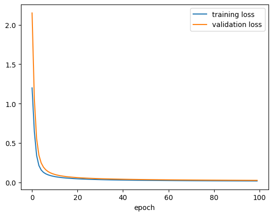
Subclassing API (yaitu dengan OOP)
Untuk model yang lebih kompleks, mungkin komposisi fungsi akan membuat pusing, karena banyak fungsi bertebaran di mana-mana. Agar lebih rapi dan terstruktur, kita bisa gunakan Subclassing API, yaitu dengan OOP / object oriented programming.
Silakan review Modul 2 Praktikum Struktur Data tentang Pengantar OOP kalau perlu ;)
Dalam Subclassing API, model yang kita buat berupa class yang meng-inherit (atau disebut subclassing) dari keras.Model yang sudah mengimplementasikan sebagian besar method yang kita butuhkan.
(Bahkan, kita juga bisa buat class yang hanya berupa kumpulan layer, yang nantinya akan masuk lagi ke class lain. Kalian bisa pelajari lebih lanjut: https://keras.io/guides/making_new_layers_and_models_via_subclassing/)
Dalam model yang kita susun, hanya diperlukan:
constructor
__init__berisi minimal satu baris, yaitusuper().__init__()dan boleh berisi baris lainnya untuk menyiapkan atribut (variabel) yang langsung bisa dibuat ketika model dibuat (sebelum mulai training)method
callyang mendefinisikan bagaimana forward pass(opsional) method
buildyang menyiapkan atribut yang bisa dibuat di awal training setelah ukuran input diketahui
class MyPerceptron(keras.Model):
def __init__(self, units=1):
super().__init__()
# banyaknya neuron di output layer
self.units = units
# menyiapkan parameter (weights and biases) tergantung ukuran input
def build(self, input_shape):
input_dim = input_shape[-1]
# matriks W terkadang disebut kernel
self.kernel = self.add_weight(
shape = (input_dim, self.units),
initializer = keras.initializers.RandomNormal(mean=0, stddev=0.05),
trainable = True,
)
self.bias = self.add_weight(
shape = (self.units,),
initializer = keras.initializers.RandomNormal(),
trainable = True
)
# forward pass
def call(self, inputs):
return tf.sigmoid(
tf.matmul(inputs, self.kernel) + self.bias
)Kita harus membuat instance atau objek dari class ini terlebih dahulu, lalu memanggil .build() dulu, agar kemudian bisa melakukan misalnya .fit()
model2 = MyPerceptron()model2.build(input_shape = (2,))Sekarang kita bisa compile, fit, simpan history, dan plot loss seperti biasa…
model2.compile(
optimizer = keras.optimizers.SGD(learning_rate = 0.01),
loss = keras.losses.BinaryCrossentropy(),
metrics = [keras.metrics.BinaryAccuracy()]
)history2 = model2.fit(inputs_arr, targets_arr, epochs=100, validation_split=0.2)Epoch 1/100
50/50 [==============================] - 2s 8ms/step - loss: 0.5171 - binary_accuracy: 0.9000 - val_loss: 0.4495 - val_binary_accuracy: 0.9725
Epoch 2/100
50/50 [==============================] - 0s 3ms/step - loss: 0.2978 - binary_accuracy: 0.9944 - val_loss: 0.3160 - val_binary_accuracy: 0.9800
Epoch 3/100
50/50 [==============================] - 0s 3ms/step - loss: 0.2108 - binary_accuracy: 0.9950 - val_loss: 0.2446 - val_binary_accuracy: 0.9850
Epoch 4/100
50/50 [==============================] - 0s 4ms/step - loss: 0.1650 - binary_accuracy: 0.9950 - val_loss: 0.2012 - val_binary_accuracy: 0.9900
Epoch 5/100
50/50 [==============================] - 0s 4ms/step - loss: 0.1368 - binary_accuracy: 0.9956 - val_loss: 0.1720 - val_binary_accuracy: 0.9900
Epoch 6/100
50/50 [==============================] - 0s 4ms/step - loss: 0.1176 - binary_accuracy: 0.9962 - val_loss: 0.1510 - val_binary_accuracy: 0.9900
Epoch 7/100
50/50 [==============================] - 0s 4ms/step - loss: 0.1037 - binary_accuracy: 0.9962 - val_loss: 0.1352 - val_binary_accuracy: 0.9900
Epoch 8/100
50/50 [==============================] - 0s 4ms/step - loss: 0.0932 - binary_accuracy: 0.9969 - val_loss: 0.1230 - val_binary_accuracy: 0.9900
Epoch 9/100
50/50 [==============================] - 1s 11ms/step - loss: 0.0849 - binary_accuracy: 0.9969 - val_loss: 0.1131 - val_binary_accuracy: 0.9900
Epoch 10/100
50/50 [==============================] - 0s 7ms/step - loss: 0.0782 - binary_accuracy: 0.9969 - val_loss: 0.1050 - val_binary_accuracy: 0.9925
Epoch 11/100
50/50 [==============================] - 0s 4ms/step - loss: 0.0726 - binary_accuracy: 0.9962 - val_loss: 0.0983 - val_binary_accuracy: 0.9925
Epoch 12/100
50/50 [==============================] - 0s 5ms/step - loss: 0.0680 - binary_accuracy: 0.9962 - val_loss: 0.0926 - val_binary_accuracy: 0.9925
Epoch 13/100
50/50 [==============================] - 0s 8ms/step - loss: 0.0640 - binary_accuracy: 0.9962 - val_loss: 0.0876 - val_binary_accuracy: 0.9925
Epoch 14/100
50/50 [==============================] - 0s 8ms/step - loss: 0.0605 - binary_accuracy: 0.9962 - val_loss: 0.0833 - val_binary_accuracy: 0.9925
Epoch 15/100
50/50 [==============================] - 0s 9ms/step - loss: 0.0575 - binary_accuracy: 0.9962 - val_loss: 0.0796 - val_binary_accuracy: 0.9925
Epoch 16/100
50/50 [==============================] - 0s 9ms/step - loss: 0.0549 - binary_accuracy: 0.9962 - val_loss: 0.0762 - val_binary_accuracy: 0.9925
Epoch 17/100
50/50 [==============================] - 0s 5ms/step - loss: 0.0525 - binary_accuracy: 0.9962 - val_loss: 0.0732 - val_binary_accuracy: 0.9925
Epoch 18/100
50/50 [==============================] - 0s 5ms/step - loss: 0.0504 - binary_accuracy: 0.9969 - val_loss: 0.0705 - val_binary_accuracy: 0.9925
Epoch 19/100
50/50 [==============================] - 0s 4ms/step - loss: 0.0485 - binary_accuracy: 0.9969 - val_loss: 0.0681 - val_binary_accuracy: 0.9925
Epoch 20/100
50/50 [==============================] - 0s 4ms/step - loss: 0.0468 - binary_accuracy: 0.9969 - val_loss: 0.0658 - val_binary_accuracy: 0.9925
Epoch 21/100
50/50 [==============================] - 0s 4ms/step - loss: 0.0452 - binary_accuracy: 0.9969 - val_loss: 0.0638 - val_binary_accuracy: 0.9925
Epoch 22/100
50/50 [==============================] - 0s 4ms/step - loss: 0.0438 - binary_accuracy: 0.9969 - val_loss: 0.0620 - val_binary_accuracy: 0.9925
Epoch 23/100
50/50 [==============================] - 0s 4ms/step - loss: 0.0425 - binary_accuracy: 0.9969 - val_loss: 0.0603 - val_binary_accuracy: 0.9925
Epoch 24/100
50/50 [==============================] - 0s 4ms/step - loss: 0.0413 - binary_accuracy: 0.9969 - val_loss: 0.0587 - val_binary_accuracy: 0.9925
Epoch 25/100
50/50 [==============================] - 0s 8ms/step - loss: 0.0401 - binary_accuracy: 0.9969 - val_loss: 0.0572 - val_binary_accuracy: 0.9925
Epoch 26/100
50/50 [==============================] - 0s 4ms/step - loss: 0.0391 - binary_accuracy: 0.9969 - val_loss: 0.0559 - val_binary_accuracy: 0.9925
Epoch 27/100
50/50 [==============================] - 0s 3ms/step - loss: 0.0381 - binary_accuracy: 0.9969 - val_loss: 0.0546 - val_binary_accuracy: 0.9925
Epoch 28/100
50/50 [==============================] - 0s 4ms/step - loss: 0.0372 - binary_accuracy: 0.9969 - val_loss: 0.0534 - val_binary_accuracy: 0.9925
Epoch 29/100
50/50 [==============================] - 0s 5ms/step - loss: 0.0364 - binary_accuracy: 0.9969 - val_loss: 0.0523 - val_binary_accuracy: 0.9925
Epoch 30/100
50/50 [==============================] - 0s 4ms/step - loss: 0.0356 - binary_accuracy: 0.9969 - val_loss: 0.0512 - val_binary_accuracy: 0.9925
Epoch 31/100
50/50 [==============================] - 0s 6ms/step - loss: 0.0348 - binary_accuracy: 0.9969 - val_loss: 0.0503 - val_binary_accuracy: 0.9925
Epoch 32/100
50/50 [==============================] - 0s 5ms/step - loss: 0.0341 - binary_accuracy: 0.9969 - val_loss: 0.0493 - val_binary_accuracy: 0.9925
Epoch 33/100
50/50 [==============================] - 0s 4ms/step - loss: 0.0334 - binary_accuracy: 0.9969 - val_loss: 0.0484 - val_binary_accuracy: 0.9925
Epoch 34/100
50/50 [==============================] - 0s 4ms/step - loss: 0.0328 - binary_accuracy: 0.9969 - val_loss: 0.0476 - val_binary_accuracy: 0.9925
Epoch 35/100
50/50 [==============================] - 0s 4ms/step - loss: 0.0322 - binary_accuracy: 0.9969 - val_loss: 0.0468 - val_binary_accuracy: 0.9925
Epoch 36/100
50/50 [==============================] - 0s 4ms/step - loss: 0.0317 - binary_accuracy: 0.9975 - val_loss: 0.0460 - val_binary_accuracy: 0.9925
Epoch 37/100
50/50 [==============================] - 0s 4ms/step - loss: 0.0311 - binary_accuracy: 0.9975 - val_loss: 0.0453 - val_binary_accuracy: 0.9925
Epoch 38/100
50/50 [==============================] - 0s 4ms/step - loss: 0.0306 - binary_accuracy: 0.9975 - val_loss: 0.0446 - val_binary_accuracy: 0.9925
Epoch 39/100
50/50 [==============================] - 0s 4ms/step - loss: 0.0301 - binary_accuracy: 0.9975 - val_loss: 0.0440 - val_binary_accuracy: 0.9925
Epoch 40/100
50/50 [==============================] - 0s 4ms/step - loss: 0.0296 - binary_accuracy: 0.9975 - val_loss: 0.0433 - val_binary_accuracy: 0.9925
Epoch 41/100
50/50 [==============================] - 0s 4ms/step - loss: 0.0292 - binary_accuracy: 0.9975 - val_loss: 0.0427 - val_binary_accuracy: 0.9925
Epoch 42/100
50/50 [==============================] - 0s 4ms/step - loss: 0.0288 - binary_accuracy: 0.9975 - val_loss: 0.0422 - val_binary_accuracy: 0.9925
Epoch 43/100
50/50 [==============================] - 0s 4ms/step - loss: 0.0284 - binary_accuracy: 0.9975 - val_loss: 0.0416 - val_binary_accuracy: 0.9925
Epoch 44/100
50/50 [==============================] - 0s 3ms/step - loss: 0.0280 - binary_accuracy: 0.9975 - val_loss: 0.0411 - val_binary_accuracy: 0.9925
Epoch 45/100
50/50 [==============================] - 0s 3ms/step - loss: 0.0276 - binary_accuracy: 0.9975 - val_loss: 0.0406 - val_binary_accuracy: 0.9925
Epoch 46/100
50/50 [==============================] - 0s 3ms/step - loss: 0.0272 - binary_accuracy: 0.9975 - val_loss: 0.0401 - val_binary_accuracy: 0.9925
Epoch 47/100
50/50 [==============================] - 0s 4ms/step - loss: 0.0269 - binary_accuracy: 0.9975 - val_loss: 0.0396 - val_binary_accuracy: 0.9925
Epoch 48/100
50/50 [==============================] - 0s 8ms/step - loss: 0.0266 - binary_accuracy: 0.9975 - val_loss: 0.0392 - val_binary_accuracy: 0.9925
Epoch 49/100
50/50 [==============================] - 0s 4ms/step - loss: 0.0262 - binary_accuracy: 0.9975 - val_loss: 0.0388 - val_binary_accuracy: 0.9925
Epoch 50/100
50/50 [==============================] - 0s 4ms/step - loss: 0.0259 - binary_accuracy: 0.9975 - val_loss: 0.0383 - val_binary_accuracy: 0.9925
Epoch 51/100
50/50 [==============================] - 0s 3ms/step - loss: 0.0256 - binary_accuracy: 0.9975 - val_loss: 0.0379 - val_binary_accuracy: 0.9925
Epoch 52/100
50/50 [==============================] - 0s 4ms/step - loss: 0.0254 - binary_accuracy: 0.9975 - val_loss: 0.0375 - val_binary_accuracy: 0.9925
Epoch 53/100
50/50 [==============================] - 0s 4ms/step - loss: 0.0251 - binary_accuracy: 0.9975 - val_loss: 0.0372 - val_binary_accuracy: 0.9925
Epoch 54/100
50/50 [==============================] - 0s 4ms/step - loss: 0.0248 - binary_accuracy: 0.9975 - val_loss: 0.0368 - val_binary_accuracy: 0.9925
Epoch 55/100
50/50 [==============================] - 0s 5ms/step - loss: 0.0245 - binary_accuracy: 0.9975 - val_loss: 0.0364 - val_binary_accuracy: 0.9925
Epoch 56/100
50/50 [==============================] - 0s 4ms/step - loss: 0.0243 - binary_accuracy: 0.9975 - val_loss: 0.0361 - val_binary_accuracy: 0.9925
Epoch 57/100
50/50 [==============================] - 0s 4ms/step - loss: 0.0241 - binary_accuracy: 0.9975 - val_loss: 0.0358 - val_binary_accuracy: 0.9925
Epoch 58/100
50/50 [==============================] - 0s 4ms/step - loss: 0.0238 - binary_accuracy: 0.9975 - val_loss: 0.0354 - val_binary_accuracy: 0.9925
Epoch 59/100
50/50 [==============================] - 0s 5ms/step - loss: 0.0236 - binary_accuracy: 0.9975 - val_loss: 0.0351 - val_binary_accuracy: 0.9925
Epoch 60/100
50/50 [==============================] - 0s 4ms/step - loss: 0.0234 - binary_accuracy: 0.9975 - val_loss: 0.0348 - val_binary_accuracy: 0.9925
Epoch 61/100
50/50 [==============================] - 0s 4ms/step - loss: 0.0232 - binary_accuracy: 0.9975 - val_loss: 0.0345 - val_binary_accuracy: 0.9925
Epoch 62/100
50/50 [==============================] - 0s 8ms/step - loss: 0.0230 - binary_accuracy: 0.9975 - val_loss: 0.0342 - val_binary_accuracy: 0.9925
Epoch 63/100
50/50 [==============================] - 0s 3ms/step - loss: 0.0228 - binary_accuracy: 0.9975 - val_loss: 0.0340 - val_binary_accuracy: 0.9925
Epoch 64/100
50/50 [==============================] - 0s 3ms/step - loss: 0.0226 - binary_accuracy: 0.9975 - val_loss: 0.0337 - val_binary_accuracy: 0.9925
Epoch 65/100
50/50 [==============================] - 0s 3ms/step - loss: 0.0224 - binary_accuracy: 0.9975 - val_loss: 0.0334 - val_binary_accuracy: 0.9925
Epoch 66/100
50/50 [==============================] - 0s 4ms/step - loss: 0.0222 - binary_accuracy: 0.9975 - val_loss: 0.0332 - val_binary_accuracy: 0.9925
Epoch 67/100
50/50 [==============================] - 0s 4ms/step - loss: 0.0220 - binary_accuracy: 0.9975 - val_loss: 0.0329 - val_binary_accuracy: 0.9925
Epoch 68/100
50/50 [==============================] - 0s 4ms/step - loss: 0.0218 - binary_accuracy: 0.9975 - val_loss: 0.0327 - val_binary_accuracy: 0.9925
Epoch 69/100
50/50 [==============================] - 0s 4ms/step - loss: 0.0217 - binary_accuracy: 0.9975 - val_loss: 0.0325 - val_binary_accuracy: 0.9925
Epoch 70/100
50/50 [==============================] - 0s 3ms/step - loss: 0.0215 - binary_accuracy: 0.9975 - val_loss: 0.0322 - val_binary_accuracy: 0.9925
Epoch 71/100
50/50 [==============================] - 0s 4ms/step - loss: 0.0213 - binary_accuracy: 0.9975 - val_loss: 0.0320 - val_binary_accuracy: 0.9925
Epoch 72/100
50/50 [==============================] - 0s 3ms/step - loss: 0.0212 - binary_accuracy: 0.9975 - val_loss: 0.0318 - val_binary_accuracy: 0.9925
Epoch 73/100
50/50 [==============================] - 0s 4ms/step - loss: 0.0210 - binary_accuracy: 0.9975 - val_loss: 0.0316 - val_binary_accuracy: 0.9925
Epoch 74/100
50/50 [==============================] - 0s 3ms/step - loss: 0.0209 - binary_accuracy: 0.9975 - val_loss: 0.0314 - val_binary_accuracy: 0.9925
Epoch 75/100
50/50 [==============================] - 0s 4ms/step - loss: 0.0207 - binary_accuracy: 0.9975 - val_loss: 0.0312 - val_binary_accuracy: 0.9925
Epoch 76/100
50/50 [==============================] - 0s 3ms/step - loss: 0.0206 - binary_accuracy: 0.9975 - val_loss: 0.0310 - val_binary_accuracy: 0.9925
Epoch 77/100
50/50 [==============================] - 0s 3ms/step - loss: 0.0204 - binary_accuracy: 0.9975 - val_loss: 0.0308 - val_binary_accuracy: 0.9925
Epoch 78/100
50/50 [==============================] - 0s 7ms/step - loss: 0.0203 - binary_accuracy: 0.9975 - val_loss: 0.0306 - val_binary_accuracy: 0.9925
Epoch 79/100
50/50 [==============================] - 0s 4ms/step - loss: 0.0202 - binary_accuracy: 0.9975 - val_loss: 0.0304 - val_binary_accuracy: 0.9925
Epoch 80/100
50/50 [==============================] - 0s 3ms/step - loss: 0.0200 - binary_accuracy: 0.9975 - val_loss: 0.0302 - val_binary_accuracy: 0.9925
Epoch 81/100
50/50 [==============================] - 0s 4ms/step - loss: 0.0199 - binary_accuracy: 0.9975 - val_loss: 0.0300 - val_binary_accuracy: 0.9925
Epoch 82/100
50/50 [==============================] - 0s 4ms/step - loss: 0.0198 - binary_accuracy: 0.9975 - val_loss: 0.0298 - val_binary_accuracy: 0.9925
Epoch 83/100
50/50 [==============================] - 0s 4ms/step - loss: 0.0197 - binary_accuracy: 0.9975 - val_loss: 0.0297 - val_binary_accuracy: 0.9925
Epoch 84/100
50/50 [==============================] - 0s 3ms/step - loss: 0.0195 - binary_accuracy: 0.9975 - val_loss: 0.0295 - val_binary_accuracy: 0.9925
Epoch 85/100
50/50 [==============================] - 0s 3ms/step - loss: 0.0194 - binary_accuracy: 0.9975 - val_loss: 0.0293 - val_binary_accuracy: 0.9925
Epoch 86/100
50/50 [==============================] - 0s 4ms/step - loss: 0.0193 - binary_accuracy: 0.9975 - val_loss: 0.0292 - val_binary_accuracy: 0.9925
Epoch 87/100
50/50 [==============================] - 0s 4ms/step - loss: 0.0192 - binary_accuracy: 0.9975 - val_loss: 0.0290 - val_binary_accuracy: 0.9925
Epoch 88/100
50/50 [==============================] - 0s 4ms/step - loss: 0.0191 - binary_accuracy: 0.9975 - val_loss: 0.0289 - val_binary_accuracy: 0.9925
Epoch 89/100
50/50 [==============================] - 0s 4ms/step - loss: 0.0190 - binary_accuracy: 0.9975 - val_loss: 0.0287 - val_binary_accuracy: 0.9925
Epoch 90/100
50/50 [==============================] - 0s 5ms/step - loss: 0.0189 - binary_accuracy: 0.9975 - val_loss: 0.0286 - val_binary_accuracy: 0.9925
Epoch 91/100
50/50 [==============================] - 0s 4ms/step - loss: 0.0188 - binary_accuracy: 0.9975 - val_loss: 0.0284 - val_binary_accuracy: 0.9925
Epoch 92/100
50/50 [==============================] - 0s 9ms/step - loss: 0.0187 - binary_accuracy: 0.9975 - val_loss: 0.0283 - val_binary_accuracy: 0.9925
Epoch 93/100
50/50 [==============================] - 0s 4ms/step - loss: 0.0186 - binary_accuracy: 0.9975 - val_loss: 0.0281 - val_binary_accuracy: 0.9925
Epoch 94/100
50/50 [==============================] - 0s 4ms/step - loss: 0.0185 - binary_accuracy: 0.9975 - val_loss: 0.0280 - val_binary_accuracy: 0.9925
Epoch 95/100
50/50 [==============================] - 0s 4ms/step - loss: 0.0184 - binary_accuracy: 0.9975 - val_loss: 0.0279 - val_binary_accuracy: 0.9925
Epoch 96/100
50/50 [==============================] - 0s 4ms/step - loss: 0.0183 - binary_accuracy: 0.9975 - val_loss: 0.0277 - val_binary_accuracy: 0.9925
Epoch 97/100
50/50 [==============================] - 0s 4ms/step - loss: 0.0182 - binary_accuracy: 0.9975 - val_loss: 0.0276 - val_binary_accuracy: 0.9925
Epoch 98/100
50/50 [==============================] - 0s 4ms/step - loss: 0.0181 - binary_accuracy: 0.9975 - val_loss: 0.0275 - val_binary_accuracy: 0.9925
Epoch 99/100
50/50 [==============================] - 0s 4ms/step - loss: 0.0180 - binary_accuracy: 0.9975 - val_loss: 0.0273 - val_binary_accuracy: 0.9925
Epoch 100/100
50/50 [==============================] - 0s 4ms/step - loss: 0.0179 - binary_accuracy: 0.9975 - val_loss: 0.0272 - val_binary_accuracy: 0.9925pd.DataFrame(history2.history).to_csv("./keras_subclassing_history2.csv", index=False)Silakan download kalau mau menyocokkan/membandingkan dengan modul: keras_subclassing_history2.csv
history2_df = pd.read_csv("./keras_subclassing_history2.csv")plt.plot(history2_df["loss"], label = "training loss")
plt.plot(history2_df["val_loss"], label = "validation loss")
plt.xlabel("epoch")
plt.legend()
plt.show()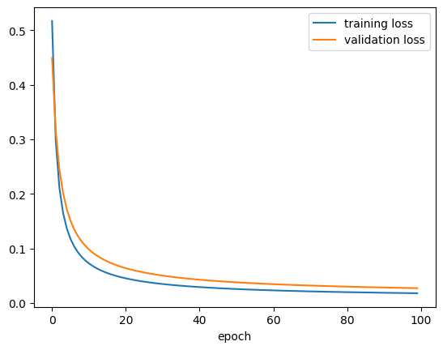
Sebenarnya, kalian bisa saja menggunakan Functional API di dalam class: siapkan fungsi-fungsinya di dalam constructor __init__ dan gunakan di dalam call
class MyPerceptron_v2(keras.Model):
def __init__(self, units=1):
super().__init__()
# banyaknya neuron di output layer
self.units = units
# siapkan fungsi
self.layer1_func = keras.layers.Dense(
units = self.units,
activation = keras.activations.sigmoid
)
# forward pass
def call(self, inputs):
x = self.layer1_func(inputs)
return xContoh skip connection dengan Functional API
Kita lihat lagi gambar skip connection:
Sumber gambar: Aggarwal (2018) hal. 348
Dari gambarnya, kita bisa coba susun neural network nya:
# x
f3_input = keras.layers.Input(shape = (5,))
# weight layers
f3_layer1_func = keras.layers.Dense(units = 10, activation = keras.activations.linear)
f3_layer2_func = keras.layers.Dense(units = 5, activation = keras.activations.relu)
# F(x)
F_out = f3_layer2_func(f3_layer1_func(f3_input))
# F(x) + x
f3_layer3_out = F_out + f3_input
# membuat model akhir
model3 = keras.Model(inputs=f3_input, outputs=f3_layer3_out, name="model3")model3.summary()Model: "model3"
__________________________________________________________________________________________________
Layer (type) Output Shape Param # Connected to
==================================================================================================
input_7 (InputLayer) [(None, 5)] 0 []
dense_9 (Dense) (None, 10) 60 ['input_7[0][0]']
dense_10 (Dense) (None, 5) 55 ['dense_9[0][0]']
tf.__operators__.add_3 (TFOpLa (None, 5) 0 ['dense_10[0][0]',
mbda) 'input_7[0][0]']
==================================================================================================
Total params: 115
Trainable params: 115
Non-trainable params: 0
__________________________________________________________________________________________________keras.utils.plot_model(
model3,
show_shapes = True,
show_layer_activations = True,
to_file = "keras_functional_model3.png"
)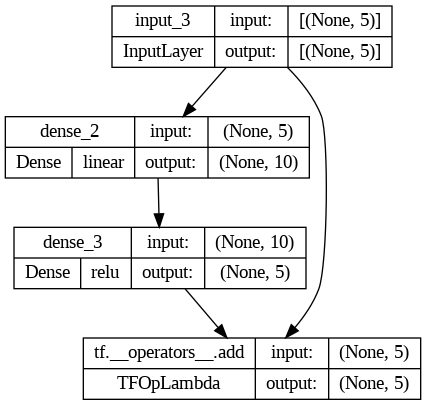
Apabila kode Functional API itu disusun ke dalam class, kodenya bisa menjadi seperti berikut:
class MySkipConnection(keras.Model):
def __init__(self, units=5):
super().__init__()
# banyaknya neuron di output layer
self.units = units
# siapkan fungsi-fungsi
self.weight1_func = keras.layers.Dense(
units = 10,
activation = keras.activations.linear
)
self.weight2_func = keras.layers.Dense(
units = self.units,
activation = keras.activations.relu
)
# forward pass
def call(self, inputs):
F_x = self.weight2_func(self.weight1_func(inputs))
x = inputs
hasil = F_x + x
return hasilNeural Network untuk Regresi
Ingat kembali, untuk regresi,
banyaknya neuron di input layer sesuai banyaknya fitur/variabel prediktor
banyaknya neuron di output layer sesuai banyaknya fitur/variabel target (biasanya hanya satu), dan fungsi aktivasi yang digunakan adalah fungsi aktivasi linier/identitas
fungsi aktivasi untuk semua hidden layer biasanya ReLU
Kita akan coba lagi dataset “California Housing Prices” (housing.csv) yang sudah kita gunakan di Modul 4 tentang regresi, yang bisa didownload dari salah satu sumber berikut:
Mari kita lihat isinya
housing_df = pd.read_csv("./housing.csv")housing_df| longitude | latitude | housing_median_age | total_rooms | total_bedrooms | population | households | median_income | median_house_value | ocean_proximity | |
|---|---|---|---|---|---|---|---|---|---|---|
| 0 | -122.23 | 37.88 | 41.0 | 880.0 | 129.0 | 322.0 | 126.0 | 8.3252 | 452600.0 | NEAR BAY |
| 1 | -122.22 | 37.86 | 21.0 | 7099.0 | 1106.0 | 2401.0 | 1138.0 | 8.3014 | 358500.0 | NEAR BAY |
| 2 | -122.24 | 37.85 | 52.0 | 1467.0 | 190.0 | 496.0 | 177.0 | 7.2574 | 352100.0 | NEAR BAY |
| 3 | -122.25 | 37.85 | 52.0 | 1274.0 | 235.0 | 558.0 | 219.0 | 5.6431 | 341300.0 | NEAR BAY |
| 4 | -122.25 | 37.85 | 52.0 | 1627.0 | 280.0 | 565.0 | 259.0 | 3.8462 | 342200.0 | NEAR BAY |
| ... | ... | ... | ... | ... | ... | ... | ... | ... | ... | ... |
| 20635 | -121.09 | 39.48 | 25.0 | 1665.0 | 374.0 | 845.0 | 330.0 | 1.5603 | 78100.0 | INLAND |
| 20636 | -121.21 | 39.49 | 18.0 | 697.0 | 150.0 | 356.0 | 114.0 | 2.5568 | 77100.0 | INLAND |
| 20637 | -121.22 | 39.43 | 17.0 | 2254.0 | 485.0 | 1007.0 | 433.0 | 1.7000 | 92300.0 | INLAND |
| 20638 | -121.32 | 39.43 | 18.0 | 1860.0 | 409.0 | 741.0 | 349.0 | 1.8672 | 84700.0 | INLAND |
| 20639 | -121.24 | 39.37 | 16.0 | 2785.0 | 616.0 | 1387.0 | 530.0 | 2.3886 | 89400.0 | INLAND |
20640 rows × 10 columns
Kalau mau, kalian bisa melakukan encoding data kategorik ocean_proximity seperti di Modul 3. Tapi kali ini kita hapus/drop saja
housing_df = housing_df.drop(columns=["ocean_proximity"])housing_df| longitude | latitude | housing_median_age | total_rooms | total_bedrooms | population | households | median_income | median_house_value | |
|---|---|---|---|---|---|---|---|---|---|
| 0 | -122.23 | 37.88 | 41.0 | 880.0 | 129.0 | 322.0 | 126.0 | 8.3252 | 452600.0 |
| 1 | -122.22 | 37.86 | 21.0 | 7099.0 | 1106.0 | 2401.0 | 1138.0 | 8.3014 | 358500.0 |
| 2 | -122.24 | 37.85 | 52.0 | 1467.0 | 190.0 | 496.0 | 177.0 | 7.2574 | 352100.0 |
| 3 | -122.25 | 37.85 | 52.0 | 1274.0 | 235.0 | 558.0 | 219.0 | 5.6431 | 341300.0 |
| 4 | -122.25 | 37.85 | 52.0 | 1627.0 | 280.0 | 565.0 | 259.0 | 3.8462 | 342200.0 |
| ... | ... | ... | ... | ... | ... | ... | ... | ... | ... |
| 20635 | -121.09 | 39.48 | 25.0 | 1665.0 | 374.0 | 845.0 | 330.0 | 1.5603 | 78100.0 |
| 20636 | -121.21 | 39.49 | 18.0 | 697.0 | 150.0 | 356.0 | 114.0 | 2.5568 | 77100.0 |
| 20637 | -121.22 | 39.43 | 17.0 | 2254.0 | 485.0 | 1007.0 | 433.0 | 1.7000 | 92300.0 |
| 20638 | -121.32 | 39.43 | 18.0 | 1860.0 | 409.0 | 741.0 | 349.0 | 1.8672 | 84700.0 |
| 20639 | -121.24 | 39.37 | 16.0 | 2785.0 | 616.0 | 1387.0 | 530.0 | 2.3886 | 89400.0 |
20640 rows × 9 columns
Ingat bahwa variabel target (variabel yang ingin kita prediksi) adalah median_house_value. Kita pisah dulu antara variabel prediktor (X atau inputs) dan variabel target (y atau target)
housing_X_df = housing_df.drop(columns=["median_house_value"])
housing_y_df = housing_df[["median_house_value"]]Lalu kita ubah jadi numpy array agar bisa diolah Keras
housing_X_arr = housing_X_df.to_numpy()
housing_y_arr = housing_y_df.to_numpy()print(housing_X_arr.shape)
print(housing_y_arr.shape)(20640, 8)
(20640, 1)Train test split, standarisasi:
from sklearn.model_selection import train_test_splitX_train, X_test, y_train, y_test = train_test_split(
housing_X_arr, housing_y_arr, test_size=0.1, random_state=42
)from sklearn.preprocessing import StandardScalerscaler = StandardScaler()
X_train = scaler.fit_transform(X_train)
X_test = scaler.transform(X_test)Data target juga relatif sangat besar, sehingga sebaiknya kita scaling juga:
print(f'y min: {y_train.min()}')
print(f'y max: {y_train.max()}')y min: 14999.0
y max: 500001.0y_train /= 100000
y_test /= 100000print(f'y min: {y_train.min()}')
print(f'y max: {y_train.max()}')y min: 0.14999
y max: 5.00001Sekarang kita bisa susun modelnya
keras.backend.clear_session()model4 = keras.Sequential(
[
keras.layers.InputLayer(input_shape = (housing_X_arr.shape[1:])),
keras.layers.Dense(units = 15, activation = keras.activations.relu),
keras.layers.Dense(units = 30, activation = keras.activations.relu),
keras.layers.Dense(units = 1, activation = keras.activations.linear)
]
)model4.summary()Model: "sequential"
_________________________________________________________________
Layer (type) Output Shape Param #
=================================================================
dense (Dense) (None, 15) 135
dense_1 (Dense) (None, 30) 480
dense_2 (Dense) (None, 1) 31
=================================================================
Total params: 646
Trainable params: 646
Non-trainable params: 0
_________________________________________________________________keras.utils.plot_model(
model4,
show_shapes = True,
show_layer_activations = True,
to_file = "keras_sequential_model4.png"
)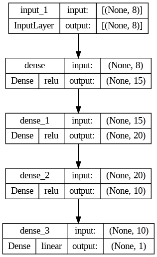
Selanjutnya, kita tentukan hyperparameter: optimizer, loss function, dan accuracy.
Ingat kembali, untuk regresi, loss function yang biasa digunakan adalah MSE (Mean Squared Error)
early_stop = keras.callbacks.EarlyStopping(
patience=5, monitor='val_loss', restore_best_weights=True, verbose=1
)model4.compile(
optimizer = keras.optimizers.Adam(learning_rate = 0.001),
loss = keras.losses.MeanSquaredError(),
metrics = [keras.metrics.Accuracy()]
)history4 = model4.fit(X_train, y_train, epochs=100, validation_split=1/9)Epoch 1/100
516/516 [==============================] - 6s 4ms/step - loss: 0.8861 - accuracy: 0.0000e+00 - val_loss: 0.4775 - val_accuracy: 0.0000e+00
Epoch 2/100
516/516 [==============================] - 2s 4ms/step - loss: 0.4211 - accuracy: 0.0000e+00 - val_loss: 0.4415 - val_accuracy: 0.0000e+00
Epoch 3/100
516/516 [==============================] - 2s 3ms/step - loss: 0.3904 - accuracy: 0.0000e+00 - val_loss: 0.4295 - val_accuracy: 0.0000e+00
Epoch 4/100
516/516 [==============================] - 2s 3ms/step - loss: 0.3753 - accuracy: 0.0000e+00 - val_loss: 0.4221 - val_accuracy: 0.0000e+00
Epoch 5/100
516/516 [==============================] - 2s 4ms/step - loss: 0.3670 - accuracy: 0.0000e+00 - val_loss: 0.4116 - val_accuracy: 0.0000e+00
Epoch 6/100
516/516 [==============================] - 2s 4ms/step - loss: 0.3581 - accuracy: 0.0000e+00 - val_loss: 0.3995 - val_accuracy: 0.0000e+00
Epoch 7/100
516/516 [==============================] - 2s 3ms/step - loss: 0.3498 - accuracy: 0.0000e+00 - val_loss: 0.4065 - val_accuracy: 0.0000e+00
Epoch 8/100
516/516 [==============================] - 2s 4ms/step - loss: 0.3453 - accuracy: 0.0000e+00 - val_loss: 0.3874 - val_accuracy: 0.0000e+00
Epoch 9/100
516/516 [==============================] - 3s 5ms/step - loss: 0.3418 - accuracy: 0.0000e+00 - val_loss: 0.3839 - val_accuracy: 0.0000e+00
Epoch 10/100
516/516 [==============================] - 2s 4ms/step - loss: 0.3361 - accuracy: 0.0000e+00 - val_loss: 0.3779 - val_accuracy: 0.0000e+00
Epoch 11/100
516/516 [==============================] - 2s 5ms/step - loss: 0.3321 - accuracy: 0.0000e+00 - val_loss: 0.3782 - val_accuracy: 0.0000e+00
Epoch 12/100
516/516 [==============================] - 3s 5ms/step - loss: 0.3294 - accuracy: 0.0000e+00 - val_loss: 0.3718 - val_accuracy: 0.0000e+00
Epoch 13/100
516/516 [==============================] - 3s 6ms/step - loss: 0.3266 - accuracy: 0.0000e+00 - val_loss: 0.3698 - val_accuracy: 0.0000e+00
Epoch 14/100
516/516 [==============================] - 2s 4ms/step - loss: 0.3236 - accuracy: 0.0000e+00 - val_loss: 0.3614 - val_accuracy: 0.0000e+00
Epoch 15/100
516/516 [==============================] - 2s 3ms/step - loss: 0.3205 - accuracy: 0.0000e+00 - val_loss: 0.3583 - val_accuracy: 0.0000e+00
Epoch 16/100
516/516 [==============================] - 1s 2ms/step - loss: 0.3189 - accuracy: 0.0000e+00 - val_loss: 0.3548 - val_accuracy: 0.0000e+00
Epoch 17/100
516/516 [==============================] - 1s 2ms/step - loss: 0.3173 - accuracy: 0.0000e+00 - val_loss: 0.3593 - val_accuracy: 0.0000e+00
Epoch 18/100
516/516 [==============================] - 2s 4ms/step - loss: 0.3150 - accuracy: 0.0000e+00 - val_loss: 0.3563 - val_accuracy: 0.0000e+00
Epoch 19/100
516/516 [==============================] - 4s 7ms/step - loss: 0.3137 - accuracy: 0.0000e+00 - val_loss: 0.3513 - val_accuracy: 0.0000e+00
Epoch 20/100
516/516 [==============================] - 3s 5ms/step - loss: 0.3141 - accuracy: 0.0000e+00 - val_loss: 0.3485 - val_accuracy: 0.0000e+00
Epoch 21/100
516/516 [==============================] - 2s 4ms/step - loss: 0.3105 - accuracy: 0.0000e+00 - val_loss: 0.3484 - val_accuracy: 0.0000e+00
Epoch 22/100
516/516 [==============================] - 2s 4ms/step - loss: 0.3098 - accuracy: 0.0000e+00 - val_loss: 0.3474 - val_accuracy: 0.0000e+00
Epoch 23/100
516/516 [==============================] - 2s 4ms/step - loss: 0.3082 - accuracy: 0.0000e+00 - val_loss: 0.3494 - val_accuracy: 0.0000e+00
Epoch 24/100
516/516 [==============================] - 2s 4ms/step - loss: 0.3068 - accuracy: 0.0000e+00 - val_loss: 0.3416 - val_accuracy: 0.0000e+00
Epoch 25/100
516/516 [==============================] - 2s 4ms/step - loss: 0.3055 - accuracy: 0.0000e+00 - val_loss: 0.3426 - val_accuracy: 0.0000e+00
Epoch 26/100
516/516 [==============================] - 2s 4ms/step - loss: 0.3041 - accuracy: 0.0000e+00 - val_loss: 0.3432 - val_accuracy: 0.0000e+00
Epoch 27/100
516/516 [==============================] - 2s 4ms/step - loss: 0.3003 - accuracy: 0.0000e+00 - val_loss: 0.3551 - val_accuracy: 0.0000e+00
Epoch 28/100
516/516 [==============================] - 2s 3ms/step - loss: 0.2998 - accuracy: 0.0000e+00 - val_loss: 0.3423 - val_accuracy: 0.0000e+00
Epoch 29/100
516/516 [==============================] - 2s 4ms/step - loss: 0.2984 - accuracy: 0.0000e+00 - val_loss: 0.3338 - val_accuracy: 0.0000e+00
Epoch 30/100
516/516 [==============================] - 2s 4ms/step - loss: 0.2968 - accuracy: 0.0000e+00 - val_loss: 0.3331 - val_accuracy: 0.0000e+00
Epoch 31/100
516/516 [==============================] - 2s 4ms/step - loss: 0.2948 - accuracy: 0.0000e+00 - val_loss: 0.3368 - val_accuracy: 0.0000e+00
Epoch 32/100
516/516 [==============================] - 2s 4ms/step - loss: 0.2939 - accuracy: 0.0000e+00 - val_loss: 0.3339 - val_accuracy: 0.0000e+00
Epoch 33/100
516/516 [==============================] - 2s 4ms/step - loss: 0.2924 - accuracy: 0.0000e+00 - val_loss: 0.3331 - val_accuracy: 0.0000e+00
Epoch 34/100
516/516 [==============================] - 3s 5ms/step - loss: 0.2933 - accuracy: 0.0000e+00 - val_loss: 0.3285 - val_accuracy: 0.0000e+00
Epoch 35/100
516/516 [==============================] - 2s 3ms/step - loss: 0.2917 - accuracy: 0.0000e+00 - val_loss: 0.3297 - val_accuracy: 0.0000e+00
Epoch 36/100
516/516 [==============================] - 2s 3ms/step - loss: 0.2919 - accuracy: 0.0000e+00 - val_loss: 0.3286 - val_accuracy: 0.0000e+00
Epoch 37/100
516/516 [==============================] - 1s 3ms/step - loss: 0.2910 - accuracy: 0.0000e+00 - val_loss: 0.3300 - val_accuracy: 0.0000e+00
Epoch 38/100
516/516 [==============================] - 3s 5ms/step - loss: 0.2895 - accuracy: 0.0000e+00 - val_loss: 0.3233 - val_accuracy: 0.0000e+00
Epoch 39/100
516/516 [==============================] - 2s 5ms/step - loss: 0.2892 - accuracy: 0.0000e+00 - val_loss: 0.3315 - val_accuracy: 0.0000e+00
Epoch 40/100
516/516 [==============================] - 2s 4ms/step - loss: 0.2885 - accuracy: 0.0000e+00 - val_loss: 0.3253 - val_accuracy: 0.0000e+00
Epoch 41/100
516/516 [==============================] - 2s 3ms/step - loss: 0.2880 - accuracy: 0.0000e+00 - val_loss: 0.3366 - val_accuracy: 0.0000e+00
Epoch 42/100
516/516 [==============================] - 2s 4ms/step - loss: 0.2871 - accuracy: 0.0000e+00 - val_loss: 0.3257 - val_accuracy: 0.0000e+00
Epoch 43/100
516/516 [==============================] - 2s 4ms/step - loss: 0.2851 - accuracy: 0.0000e+00 - val_loss: 0.3200 - val_accuracy: 0.0000e+00
Epoch 44/100
516/516 [==============================] - 2s 4ms/step - loss: 0.2855 - accuracy: 0.0000e+00 - val_loss: 0.3179 - val_accuracy: 0.0000e+00
Epoch 45/100
516/516 [==============================] - 2s 4ms/step - loss: 0.2856 - accuracy: 0.0000e+00 - val_loss: 0.3165 - val_accuracy: 0.0000e+00
Epoch 46/100
516/516 [==============================] - 2s 4ms/step - loss: 0.2838 - accuracy: 0.0000e+00 - val_loss: 0.3145 - val_accuracy: 0.0000e+00
Epoch 47/100
516/516 [==============================] - 2s 4ms/step - loss: 0.2839 - accuracy: 0.0000e+00 - val_loss: 0.3287 - val_accuracy: 0.0000e+00
Epoch 48/100
516/516 [==============================] - 2s 4ms/step - loss: 0.2827 - accuracy: 0.0000e+00 - val_loss: 0.3291 - val_accuracy: 0.0000e+00
Epoch 49/100
516/516 [==============================] - 2s 3ms/step - loss: 0.2835 - accuracy: 0.0000e+00 - val_loss: 0.3196 - val_accuracy: 0.0000e+00
Epoch 50/100
516/516 [==============================] - 2s 4ms/step - loss: 0.2807 - accuracy: 0.0000e+00 - val_loss: 0.3111 - val_accuracy: 0.0000e+00
Epoch 51/100
516/516 [==============================] - 2s 4ms/step - loss: 0.2819 - accuracy: 0.0000e+00 - val_loss: 0.3354 - val_accuracy: 0.0000e+00
Epoch 52/100
516/516 [==============================] - 2s 4ms/step - loss: 0.2811 - accuracy: 0.0000e+00 - val_loss: 0.3170 - val_accuracy: 0.0000e+00
Epoch 53/100
516/516 [==============================] - 2s 4ms/step - loss: 0.2800 - accuracy: 0.0000e+00 - val_loss: 0.3158 - val_accuracy: 0.0000e+00
Epoch 54/100
516/516 [==============================] - 2s 4ms/step - loss: 0.2791 - accuracy: 0.0000e+00 - val_loss: 0.3152 - val_accuracy: 0.0000e+00
Epoch 55/100
516/516 [==============================] - 2s 4ms/step - loss: 0.2796 - accuracy: 0.0000e+00 - val_loss: 0.3158 - val_accuracy: 0.0000e+00
Epoch 56/100
516/516 [==============================] - 2s 4ms/step - loss: 0.2796 - accuracy: 0.0000e+00 - val_loss: 0.3164 - val_accuracy: 0.0000e+00
Epoch 57/100
516/516 [==============================] - 2s 4ms/step - loss: 0.2802 - accuracy: 0.0000e+00 - val_loss: 0.3070 - val_accuracy: 0.0000e+00
Epoch 58/100
516/516 [==============================] - 2s 4ms/step - loss: 0.2775 - accuracy: 0.0000e+00 - val_loss: 0.3103 - val_accuracy: 0.0000e+00
Epoch 59/100
516/516 [==============================] - 2s 3ms/step - loss: 0.2780 - accuracy: 0.0000e+00 - val_loss: 0.3108 - val_accuracy: 0.0000e+00
Epoch 60/100
516/516 [==============================] - 2s 4ms/step - loss: 0.2779 - accuracy: 0.0000e+00 - val_loss: 0.3056 - val_accuracy: 0.0000e+00
Epoch 61/100
516/516 [==============================] - 2s 4ms/step - loss: 0.2766 - accuracy: 0.0000e+00 - val_loss: 0.3087 - val_accuracy: 0.0000e+00
Epoch 62/100
516/516 [==============================] - 2s 4ms/step - loss: 0.2762 - accuracy: 0.0000e+00 - val_loss: 0.3094 - val_accuracy: 0.0000e+00
Epoch 63/100
516/516 [==============================] - 2s 3ms/step - loss: 0.2759 - accuracy: 0.0000e+00 - val_loss: 0.3117 - val_accuracy: 0.0000e+00
Epoch 64/100
516/516 [==============================] - 2s 4ms/step - loss: 0.2761 - accuracy: 0.0000e+00 - val_loss: 0.3026 - val_accuracy: 0.0000e+00
Epoch 65/100
516/516 [==============================] - 2s 4ms/step - loss: 0.2738 - accuracy: 0.0000e+00 - val_loss: 0.3146 - val_accuracy: 0.0000e+00
Epoch 66/100
516/516 [==============================] - 2s 4ms/step - loss: 0.2745 - accuracy: 0.0000e+00 - val_loss: 0.3051 - val_accuracy: 0.0000e+00
Epoch 67/100
516/516 [==============================] - 2s 4ms/step - loss: 0.2747 - accuracy: 0.0000e+00 - val_loss: 0.3139 - val_accuracy: 0.0000e+00
Epoch 68/100
516/516 [==============================] - 2s 4ms/step - loss: 0.2746 - accuracy: 0.0000e+00 - val_loss: 0.3098 - val_accuracy: 0.0000e+00
Epoch 69/100
516/516 [==============================] - 2s 4ms/step - loss: 0.2744 - accuracy: 0.0000e+00 - val_loss: 0.3069 - val_accuracy: 0.0000e+00
Epoch 70/100
516/516 [==============================] - 2s 4ms/step - loss: 0.2737 - accuracy: 0.0000e+00 - val_loss: 0.3083 - val_accuracy: 0.0000e+00
Epoch 71/100
516/516 [==============================] - 2s 3ms/step - loss: 0.2727 - accuracy: 0.0000e+00 - val_loss: 0.3110 - val_accuracy: 0.0000e+00
Epoch 72/100
516/516 [==============================] - 2s 4ms/step - loss: 0.2734 - accuracy: 0.0000e+00 - val_loss: 0.3095 - val_accuracy: 0.0000e+00
Epoch 73/100
516/516 [==============================] - 2s 4ms/step - loss: 0.2715 - accuracy: 6.0562e-05 - val_loss: 0.3102 - val_accuracy: 0.0000e+00
Epoch 74/100
516/516 [==============================] - 2s 4ms/step - loss: 0.2709 - accuracy: 0.0000e+00 - val_loss: 0.3093 - val_accuracy: 0.0000e+00
Epoch 75/100
516/516 [==============================] - 2s 4ms/step - loss: 0.2713 - accuracy: 0.0000e+00 - val_loss: 0.3006 - val_accuracy: 0.0000e+00
Epoch 76/100
516/516 [==============================] - 2s 4ms/step - loss: 0.2704 - accuracy: 0.0000e+00 - val_loss: 0.2985 - val_accuracy: 0.0000e+00
Epoch 77/100
516/516 [==============================] - 2s 3ms/step - loss: 0.2704 - accuracy: 0.0000e+00 - val_loss: 0.2987 - val_accuracy: 0.0000e+00
Epoch 78/100
516/516 [==============================] - 2s 4ms/step - loss: 0.2682 - accuracy: 0.0000e+00 - val_loss: 0.2959 - val_accuracy: 0.0000e+00
Epoch 79/100
516/516 [==============================] - 2s 4ms/step - loss: 0.2692 - accuracy: 0.0000e+00 - val_loss: 0.3003 - val_accuracy: 0.0000e+00
Epoch 80/100
516/516 [==============================] - 2s 4ms/step - loss: 0.2693 - accuracy: 0.0000e+00 - val_loss: 0.2978 - val_accuracy: 0.0000e+00
Epoch 81/100
516/516 [==============================] - 2s 4ms/step - loss: 0.2689 - accuracy: 0.0000e+00 - val_loss: 0.2991 - val_accuracy: 0.0000e+00
Epoch 82/100
516/516 [==============================] - 2s 4ms/step - loss: 0.2667 - accuracy: 0.0000e+00 - val_loss: 0.2978 - val_accuracy: 0.0000e+00
Epoch 83/100
516/516 [==============================] - 2s 5ms/step - loss: 0.2688 - accuracy: 0.0000e+00 - val_loss: 0.3050 - val_accuracy: 0.0000e+00
Epoch 84/100
516/516 [==============================] - 2s 3ms/step - loss: 0.2678 - accuracy: 0.0000e+00 - val_loss: 0.2974 - val_accuracy: 0.0000e+00
Epoch 85/100
516/516 [==============================] - 2s 4ms/step - loss: 0.2669 - accuracy: 0.0000e+00 - val_loss: 0.2992 - val_accuracy: 0.0000e+00
Epoch 86/100
516/516 [==============================] - 2s 3ms/step - loss: 0.2675 - accuracy: 0.0000e+00 - val_loss: 0.2976 - val_accuracy: 0.0000e+00
Epoch 87/100
516/516 [==============================] - 2s 4ms/step - loss: 0.2664 - accuracy: 0.0000e+00 - val_loss: 0.2989 - val_accuracy: 0.0000e+00
Epoch 88/100
516/516 [==============================] - 2s 4ms/step - loss: 0.2659 - accuracy: 0.0000e+00 - val_loss: 0.3006 - val_accuracy: 0.0000e+00
Epoch 89/100
516/516 [==============================] - 2s 4ms/step - loss: 0.2664 - accuracy: 0.0000e+00 - val_loss: 0.3128 - val_accuracy: 0.0000e+00
Epoch 90/100
516/516 [==============================] - 2s 3ms/step - loss: 0.2664 - accuracy: 0.0000e+00 - val_loss: 0.2985 - val_accuracy: 0.0000e+00
Epoch 91/100
516/516 [==============================] - 2s 4ms/step - loss: 0.2657 - accuracy: 0.0000e+00 - val_loss: 0.2959 - val_accuracy: 0.0000e+00
Epoch 92/100
516/516 [==============================] - 2s 4ms/step - loss: 0.2651 - accuracy: 0.0000e+00 - val_loss: 0.2977 - val_accuracy: 0.0000e+00
Epoch 93/100
516/516 [==============================] - 2s 4ms/step - loss: 0.2650 - accuracy: 0.0000e+00 - val_loss: 0.2915 - val_accuracy: 0.0000e+00
Epoch 94/100
516/516 [==============================] - 2s 4ms/step - loss: 0.2656 - accuracy: 0.0000e+00 - val_loss: 0.2995 - val_accuracy: 0.0000e+00
Epoch 95/100
516/516 [==============================] - 2s 4ms/step - loss: 0.2648 - accuracy: 0.0000e+00 - val_loss: 0.2937 - val_accuracy: 0.0000e+00
Epoch 96/100
516/516 [==============================] - 2s 4ms/step - loss: 0.2646 - accuracy: 0.0000e+00 - val_loss: 0.3010 - val_accuracy: 0.0000e+00
Epoch 97/100
516/516 [==============================] - 2s 4ms/step - loss: 0.2638 - accuracy: 0.0000e+00 - val_loss: 0.2958 - val_accuracy: 0.0000e+00
Epoch 98/100
516/516 [==============================] - 2s 4ms/step - loss: 0.2651 - accuracy: 0.0000e+00 - val_loss: 0.2996 - val_accuracy: 0.0000e+00
Epoch 99/100
516/516 [==============================] - 2s 4ms/step - loss: 0.2640 - accuracy: 0.0000e+00 - val_loss: 0.3002 - val_accuracy: 0.0000e+00
Epoch 100/100
516/516 [==============================] - 2s 4ms/step - loss: 0.2636 - accuracy: 0.0000e+00 - val_loss: 0.2936 - val_accuracy: 0.0000e+00pd.DataFrame(history4.history).to_csv("./keras_sequential_history4.csv", index=False)Silakan download kalau mau menyocokkan/membandingkan dengan modul: keras_sequential_history4.csv
history4_df = pd.read_csv("./keras_sequential_history4.csv")plt.plot(history4_df["loss"], label = "training loss")
plt.plot(history4_df["val_loss"], label = "validation loss")
plt.xlabel("epoch")
plt.legend()
plt.show()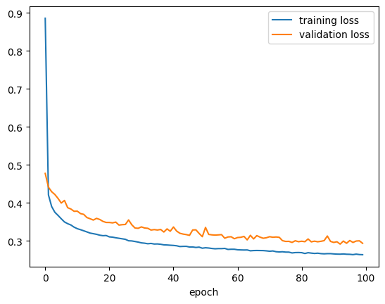
y_pred = model4.predict(X_test)
plt.hist(y_pred, color='green', alpha=.6)
plt.hist(y_test, color='blue', alpha=.6)
plt.legend(['prediction', 'truth'], loc='upper right')
plt.show()65/65 [==============================] - 1s 5ms/step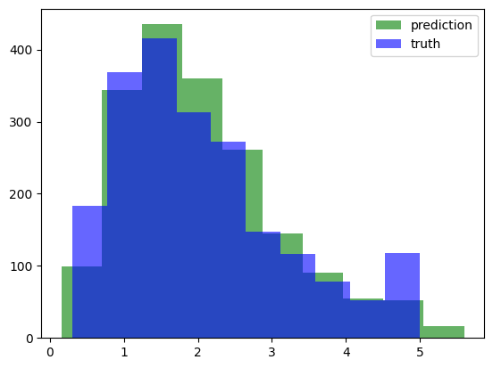
Klasifikasi Gambar dengan flatten
Gambar atau citra (image) adalah sekumpulan pixel yang disusun secara dua dimensi. Sejauh ini, neural network yang kita pelajari memiliki satu input layer yang “flat” atau datar. Sehingga, apabila kita ingin meng-input data citra ke dalam neural network, caranya adalah dengan flatten, yaitu data citra yang mula-mula dua dimensi itu disusun ulang menjadi satu dimensi.
Di Keras, ada layer istimewa untuk melakukan flatten untuk gambar berukuran a kali b pixel:
keras.layers.Flatten(input_shape = (a, b))
Ketika berurusan dengan data citra, layer ini menggantikan InputLayer yang biasa kita gunakan.
Persiapan dataset Fashion MNIST
Mari kita coba menggunakan dataset Fashion MNIST yang sudah tersedia dari Keras:
fashion_mnist = keras.datasets.fashion_mnist
(X_train_full, y_train_full), (X_test, y_test) = fashion_mnist.load_data()print(f'X_train_full shape: {X_train_full.shape}')
print(f'y_train_full shape: {y_train_full.shape}')
print(f'X_test shape: {X_test.shape}')
print(f'y_test shape: {y_test.shape}')X_train_full shape: (60000, 28, 28)
y_train_full shape: (60000,)
X_test shape: (10000, 28, 28)
y_test shape: (10000,)X_train, X_val, y_train, y_val = train_test_split(
X_train_full, y_train_full, test_size=1/6, random_state=42
)
print(f'X_train shape: {X_train.shape}')
print(f'y_train shape: {y_train.shape}')
print(f'X_val shape: {X_val.shape}')
print(f'y_val shape: {y_val.shape}')
print(f'X_test shape: {X_test.shape}')
print(f'y_test shape: {y_test.shape}')X_train shape: (50000, 28, 28)
y_train shape: (50000,)
X_val shape: (10000, 28, 28)
y_val shape: (10000,)
X_test shape: (10000, 28, 28)
y_test shape: (10000,)X_train = X_train / 255
X_val = X_val / 255
X_test = X_test / 255Ada 10 kelas:
print(set(y_train)){0, 1, 2, 3, 4, 5, 6, 7, 8, 9}class_names = ["T-shirt/top", "Trouser", "Pullover", "Dress", "Coat",
"Sandal", "Shirt", "Sneaker", "Bag", "Ankle boot"]print(len(class_names))10Kita lihat salah satu gambarnya:
#@title Slider to look for some image examples {run: "auto"}
idx = 21402 #@param {type:"slider", min:0, max:49999, step:1}
plt.imshow(X_train[idx], cmap='gray')
plt.title(class_names[y_train[idx]])
plt.axis('OFF')
plt.show()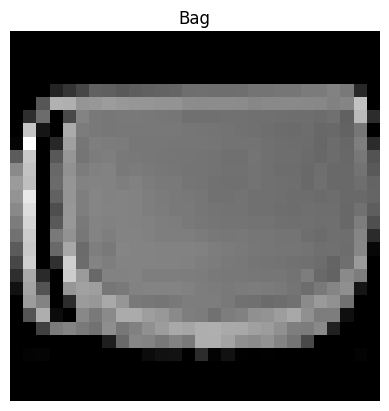
Menyusun neural network dan training
model5 = keras.Sequential(
[
keras.layers.Flatten(input_shape=(28,28)),
keras.layers.Dense(units=100, activation=keras.activations.relu),
keras.layers.Dense(units=50, activation=keras.activations.relu),
keras.layers.Dense(units=10, activation=keras.activations.softmax)
]
)model5.compile(
optimizer = keras.optimizers.Adam(learning_rate = 0.001),
loss = keras.losses.SparseCategoricalCrossentropy(),
metrics = [keras.metrics.CategoricalAccuracy()]
)model5.summary()Model: "sequential_1"
_________________________________________________________________
Layer (type) Output Shape Param #
=================================================================
flatten (Flatten) (None, 784) 0
dense_3 (Dense) (None, 100) 78500
dense_4 (Dense) (None, 50) 5050
dense_5 (Dense) (None, 10) 510
=================================================================
Total params: 84,060
Trainable params: 84,060
Non-trainable params: 0
_________________________________________________________________history5 = model5.fit(
X_train, y_train, validation_data=(X_val, y_val),
epochs=50, batch_size=256
)Epoch 1/50
196/196 [==============================] - 5s 13ms/step - loss: 0.6641 - categorical_accuracy: 0.1050 - val_loss: 0.4997 - val_categorical_accuracy: 0.0831
Epoch 2/50
196/196 [==============================] - 2s 8ms/step - loss: 0.4335 - categorical_accuracy: 0.1032 - val_loss: 0.4217 - val_categorical_accuracy: 0.1034
Epoch 3/50
196/196 [==============================] - 2s 8ms/step - loss: 0.3868 - categorical_accuracy: 0.1032 - val_loss: 0.3928 - val_categorical_accuracy: 0.0899
Epoch 4/50
196/196 [==============================] - 2s 11ms/step - loss: 0.3631 - categorical_accuracy: 0.1022 - val_loss: 0.3738 - val_categorical_accuracy: 0.0970
Epoch 5/50
196/196 [==============================] - 2s 11ms/step - loss: 0.3410 - categorical_accuracy: 0.1022 - val_loss: 0.3662 - val_categorical_accuracy: 0.1274
Epoch 6/50
196/196 [==============================] - 2s 10ms/step - loss: 0.3260 - categorical_accuracy: 0.1030 - val_loss: 0.3563 - val_categorical_accuracy: 0.1213
Epoch 7/50
196/196 [==============================] - 2s 11ms/step - loss: 0.3113 - categorical_accuracy: 0.1023 - val_loss: 0.3779 - val_categorical_accuracy: 0.1185
Epoch 8/50
196/196 [==============================] - 2s 8ms/step - loss: 0.2981 - categorical_accuracy: 0.1022 - val_loss: 0.3430 - val_categorical_accuracy: 0.1037
Epoch 9/50
196/196 [==============================] - 2s 9ms/step - loss: 0.2869 - categorical_accuracy: 0.1025 - val_loss: 0.3368 - val_categorical_accuracy: 0.1135
Epoch 10/50
196/196 [==============================] - 2s 10ms/step - loss: 0.2813 - categorical_accuracy: 0.1025 - val_loss: 0.3477 - val_categorical_accuracy: 0.0992
Epoch 11/50
196/196 [==============================] - 2s 9ms/step - loss: 0.2738 - categorical_accuracy: 0.1021 - val_loss: 0.3513 - val_categorical_accuracy: 0.1056
Epoch 12/50
196/196 [==============================] - 2s 9ms/step - loss: 0.2614 - categorical_accuracy: 0.1021 - val_loss: 0.3279 - val_categorical_accuracy: 0.1111
Epoch 13/50
196/196 [==============================] - 2s 9ms/step - loss: 0.2564 - categorical_accuracy: 0.1021 - val_loss: 0.3229 - val_categorical_accuracy: 0.0928
Epoch 14/50
196/196 [==============================] - 2s 9ms/step - loss: 0.2518 - categorical_accuracy: 0.1019 - val_loss: 0.3353 - val_categorical_accuracy: 0.1203
Epoch 15/50
196/196 [==============================] - 2s 11ms/step - loss: 0.2468 - categorical_accuracy: 0.1025 - val_loss: 0.3330 - val_categorical_accuracy: 0.1141
Epoch 16/50
196/196 [==============================] - 2s 9ms/step - loss: 0.2370 - categorical_accuracy: 0.1027 - val_loss: 0.3178 - val_categorical_accuracy: 0.0977
Epoch 17/50
196/196 [==============================] - 1s 8ms/step - loss: 0.2313 - categorical_accuracy: 0.1012 - val_loss: 0.3160 - val_categorical_accuracy: 0.0982
Epoch 18/50
196/196 [==============================] - 2s 9ms/step - loss: 0.2243 - categorical_accuracy: 0.1024 - val_loss: 0.3269 - val_categorical_accuracy: 0.1197
Epoch 19/50
196/196 [==============================] - 1s 7ms/step - loss: 0.2198 - categorical_accuracy: 0.1020 - val_loss: 0.3248 - val_categorical_accuracy: 0.1101
Epoch 20/50
196/196 [==============================] - 1s 7ms/step - loss: 0.2151 - categorical_accuracy: 0.1022 - val_loss: 0.3217 - val_categorical_accuracy: 0.1045
Epoch 21/50
196/196 [==============================] - 2s 9ms/step - loss: 0.2112 - categorical_accuracy: 0.1010 - val_loss: 0.3300 - val_categorical_accuracy: 0.1171
Epoch 22/50
196/196 [==============================] - 2s 8ms/step - loss: 0.2053 - categorical_accuracy: 0.1022 - val_loss: 0.3182 - val_categorical_accuracy: 0.1110
Epoch 23/50
196/196 [==============================] - 1s 8ms/step - loss: 0.2010 - categorical_accuracy: 0.1018 - val_loss: 0.3216 - val_categorical_accuracy: 0.1026
Epoch 24/50
196/196 [==============================] - 2s 9ms/step - loss: 0.1988 - categorical_accuracy: 0.1014 - val_loss: 0.3371 - val_categorical_accuracy: 0.1178
Epoch 25/50
196/196 [==============================] - 1s 7ms/step - loss: 0.1914 - categorical_accuracy: 0.1020 - val_loss: 0.3260 - val_categorical_accuracy: 0.0944
Epoch 26/50
196/196 [==============================] - 2s 8ms/step - loss: 0.1910 - categorical_accuracy: 0.1021 - val_loss: 0.3283 - val_categorical_accuracy: 0.1058
Epoch 27/50
196/196 [==============================] - 2s 11ms/step - loss: 0.1879 - categorical_accuracy: 0.1019 - val_loss: 0.3209 - val_categorical_accuracy: 0.1010
Epoch 28/50
196/196 [==============================] - 2s 10ms/step - loss: 0.1823 - categorical_accuracy: 0.1021 - val_loss: 0.3310 - val_categorical_accuracy: 0.1250
Epoch 29/50
196/196 [==============================] - 2s 10ms/step - loss: 0.1741 - categorical_accuracy: 0.1022 - val_loss: 0.3270 - val_categorical_accuracy: 0.1083
Epoch 30/50
196/196 [==============================] - 1s 7ms/step - loss: 0.1752 - categorical_accuracy: 0.1013 - val_loss: 0.3395 - val_categorical_accuracy: 0.1095
Epoch 31/50
196/196 [==============================] - 2s 9ms/step - loss: 0.1708 - categorical_accuracy: 0.1017 - val_loss: 0.3311 - val_categorical_accuracy: 0.1045
Epoch 32/50
196/196 [==============================] - 2s 9ms/step - loss: 0.1676 - categorical_accuracy: 0.1017 - val_loss: 0.3417 - val_categorical_accuracy: 0.0927
Epoch 33/50
196/196 [==============================] - 2s 10ms/step - loss: 0.1661 - categorical_accuracy: 0.1011 - val_loss: 0.3631 - val_categorical_accuracy: 0.1184
Epoch 34/50
196/196 [==============================] - 2s 10ms/step - loss: 0.1605 - categorical_accuracy: 0.1017 - val_loss: 0.3440 - val_categorical_accuracy: 0.1029
Epoch 35/50
196/196 [==============================] - 2s 8ms/step - loss: 0.1594 - categorical_accuracy: 0.1012 - val_loss: 0.3512 - val_categorical_accuracy: 0.1084
Epoch 36/50
196/196 [==============================] - 2s 10ms/step - loss: 0.1556 - categorical_accuracy: 0.1009 - val_loss: 0.3603 - val_categorical_accuracy: 0.1116
Epoch 37/50
196/196 [==============================] - 2s 8ms/step - loss: 0.1516 - categorical_accuracy: 0.1016 - val_loss: 0.3495 - val_categorical_accuracy: 0.1175
Epoch 38/50
196/196 [==============================] - 2s 9ms/step - loss: 0.1454 - categorical_accuracy: 0.1013 - val_loss: 0.3996 - val_categorical_accuracy: 0.1034
Epoch 39/50
196/196 [==============================] - 2s 8ms/step - loss: 0.1469 - categorical_accuracy: 0.1012 - val_loss: 0.3549 - val_categorical_accuracy: 0.1058
Epoch 40/50
196/196 [==============================] - 2s 8ms/step - loss: 0.1425 - categorical_accuracy: 0.1016 - val_loss: 0.3671 - val_categorical_accuracy: 0.1063
Epoch 41/50
196/196 [==============================] - 1s 8ms/step - loss: 0.1396 - categorical_accuracy: 0.1013 - val_loss: 0.3639 - val_categorical_accuracy: 0.1009
Epoch 42/50
196/196 [==============================] - 2s 9ms/step - loss: 0.1383 - categorical_accuracy: 0.1012 - val_loss: 0.3912 - val_categorical_accuracy: 0.1223
Epoch 43/50
196/196 [==============================] - 2s 8ms/step - loss: 0.1350 - categorical_accuracy: 0.1011 - val_loss: 0.3731 - val_categorical_accuracy: 0.1065
Epoch 44/50
196/196 [==============================] - 1s 8ms/step - loss: 0.1343 - categorical_accuracy: 0.1013 - val_loss: 0.3782 - val_categorical_accuracy: 0.1079
Epoch 45/50
196/196 [==============================] - 1s 8ms/step - loss: 0.1311 - categorical_accuracy: 0.1005 - val_loss: 0.3870 - val_categorical_accuracy: 0.1125
Epoch 46/50
196/196 [==============================] - 2s 8ms/step - loss: 0.1257 - categorical_accuracy: 0.1013 - val_loss: 0.3707 - val_categorical_accuracy: 0.1047
Epoch 47/50
196/196 [==============================] - 2s 8ms/step - loss: 0.1232 - categorical_accuracy: 0.1011 - val_loss: 0.3853 - val_categorical_accuracy: 0.1067
Epoch 48/50
196/196 [==============================] - 2s 8ms/step - loss: 0.1203 - categorical_accuracy: 0.1009 - val_loss: 0.3793 - val_categorical_accuracy: 0.1061
Epoch 49/50
196/196 [==============================] - 2s 8ms/step - loss: 0.1149 - categorical_accuracy: 0.1009 - val_loss: 0.3932 - val_categorical_accuracy: 0.1101
Epoch 50/50
196/196 [==============================] - 2s 9ms/step - loss: 0.1207 - categorical_accuracy: 0.1011 - val_loss: 0.3985 - val_categorical_accuracy: 0.1003pd.DataFrame(history5.history).to_csv("./keras_sequential_history5.csv", index=False)Silakan download kalau mau menyocokkan/membandingkan dengan modul: keras_sequential_history5.csv
history5_df = pd.read_csv("./keras_sequential_history5.csv")plt.plot(history5_df["loss"], label = "training loss")
plt.plot(history5_df["val_loss"], label = "validation loss")
plt.xlabel("epoch")
plt.legend()
plt.show()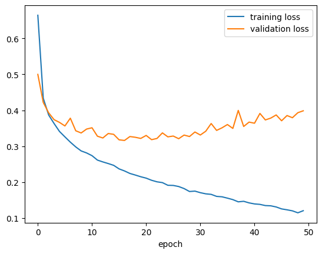
Hasil prediksi
y_pred = model5.predict(X_test)313/313 [==============================] - 2s 7ms/stepy_predarray([[7.3191592e-10, 4.9755400e-10, 2.0336069e-08, ..., 2.6508974e-04,
6.6600020e-10, 9.9970919e-01],
[1.0685701e-06, 1.3641132e-16, 9.9973696e-01, ..., 6.6150912e-25,
1.0635574e-14, 2.7912504e-22],
[3.8944440e-14, 1.0000000e+00, 7.2451013e-19, ..., 1.9461965e-25,
9.4534440e-24, 5.5635325e-28],
...,
[6.9977574e-10, 8.2804253e-17, 9.0566991e-11, ..., 4.9004850e-12,
1.0000000e+00, 8.5710581e-16],
[8.6001712e-09, 9.9999988e-01, 2.2160624e-12, ..., 9.4472928e-21,
9.9464089e-13, 7.2510805e-17],
[2.2053911e-10, 1.0453890e-11, 9.8423698e-06, ..., 2.5791397e-07,
3.4278116e-10, 9.7139477e-11]], dtype=float32)y_pred[123]array([1.04234315e-19, 2.76166473e-17, 7.08109165e-22, 1.09880367e-13,
1.19973995e-17, 3.41231225e-15, 5.77217902e-19, 1.47765789e-07,
6.00817884e-14, 9.99999881e-01], dtype=float32)np.argmax(y_pred[123])9Kita bisa melihat hasil prediksi:
#@title Slider to look for some prediction examples {run: "auto"}
idx = 123 #@param {type:"slider", min:0, max:9999, step:1}
plt.imshow(X_test[idx], cmap='gray')
plt.title(
f"Predicted class: {class_names[int(np.argmax(y_pred[idx]))]}\n" +
f"True class: {class_names[y_test[idx]]}"
)
plt.axis('OFF')
plt.show()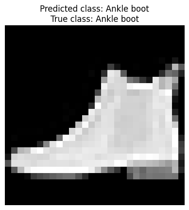
Pengantar CNN (Convolutional Neural Network)
Sebenarnya, menerima input gambar dengan teknik flatten itu kurang efektif.
Dengan dense layer, bahkan dua pixel yang sangat jauh itu juga terhubungkan, padahal seharusnya tidak berhubungan.
Karena itu juga, tidak ada penekanan hubungan antara dua pixel yang saling berdekatan.
Alangkah baiknya, ada teknik input gambar yang bisa mempertimbangkan bagaimana hubungan suatu pixel dengan pixel-pixel di sekitarnya saja, daripada dengan semua pixel.
Convolutional Neural Network (CNN) mencoba mengatasi hal ini. Ciri khasnya adalah adanya dua jenis layer baru:
convolution layer
pooling layer, biasanya max pooling
Kedua layer baru ini bersifat sparse, yaitu beberapa neuron terhubung dengan beberapa neuron saja, tidak dengan semuanya.
Gambar berikut ini membandingkan antara sparse layer dengan dense layer:

Sumber gambar: Goodfellow, et. al. (2016) hal. 337
Konsep convolution layer
Suatu convolution layer menghitung “konvolusi” (convolution).

Sumber gambar: Kotu, hal. 325
Perhitungan konvolusi selalu melibatkan suatu “filter”, yang nilai-nilainya menjadi parameter (seperti weights and biases) yang terus di-update selama proses training.

Sumber gambar: Aggarwal (2018) hal. 321
Contoh perhitungan menggunakan filter bisa dilihat di gambar berikut.

Sumber gambar: Aggarwal (2018) hal. 336
Ketika menghitung konvolusi, filter selalu digeser. Pergeseran filter ini sebenarnya tidak harus satu langkah. Bisa saja, misalnya, dua langkah. Banyaknya langkah ini disebut stride.

Sumber gambar: Kotu, hal. 328
Konsep pooling layer
Daripada menghitung konvolusi, pooling hanya menghitung statistik sederhana saja. Biasanya menghitung maksimum, yang disebut max pooling.

Sumber gambar: Kotu, hal. 328
LeNet-5: salah satu arsitektur CNN pertama
Note: aslinya, LeNet-5 menggunakan average pooling, yaitu menghitung rata-rata, tidak seperti max pooling yang memilih maksimum.

Sumber gambar: Aggarwal (2018) hal. 41
Arsitektur LeNet-5 menggunakan Keras bisa disusun sebagai berikut:
lenet5 = keras.Sequential()
lenet5.add(keras.layers.Conv2D(
input_shape = (32, 32, 1),
kernel_size = (5, 5),
filters = 6,
activation = keras.activations.sigmoid
)) # menghasilkan C1 di gambar: ukuran 28 x 28 x 6
lenet5.add(keras.layers.AveragePooling2D(
pool_size = (2, 2),
strides = 2
)) # menghasilkan S2 di gambar: ukuran 14 x 14 x 6
lenet5.add(keras.layers.Conv2D(
kernel_size = (5, 5),
filters = 16,
activation = keras.activations.sigmoid
)) # menghasilkan C3 di gambar: ukuran 10 x 10 x 16
lenet5.add(keras.layers.AveragePooling2D(
pool_size = (2, 2),
strides = 2
)) # menghasilkan S4 di gambar: ukuran 5 x 5 x 16
lenet5.add(keras.layers.Flatten())
# menjadi C5 di gambar, dengan 400 neuron
lenet5.add(keras.layers.Dense(
units = 120, activation = keras.activations.sigmoid
))
lenet5.add(keras.layers.Dense(
units = 84, activation = keras.activations.sigmoid
))
lenet5.add(keras.layers.Dense(
units = 10, activation = keras.activations.softmax
))keras.utils.plot_model(
lenet5,
show_shapes = True,
show_layer_activations = True,
to_file = "keras_sequential_lenet5.png"
)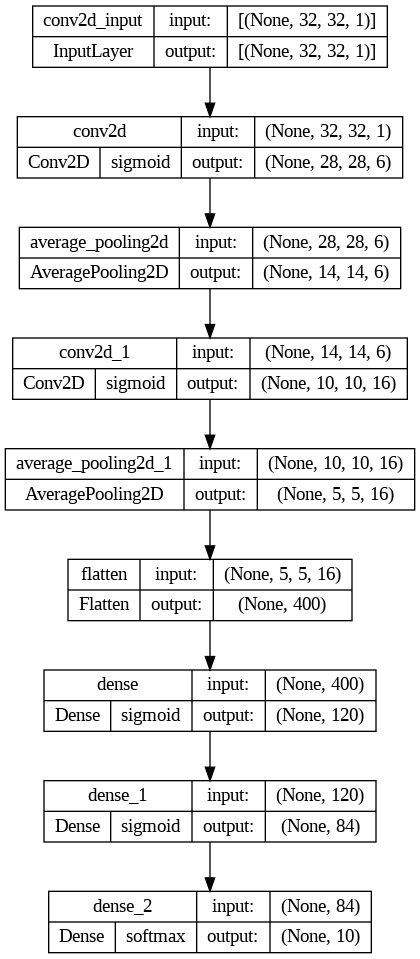
Referensi
Sumber gambar
Aggarwal, C. Charu. 2018. Neural Networks and Deep Learning: A Textbook. Edisi Pertama. Springer.
Goodfellow, Ian; Bengio, Yoshua; & Courville, Aaron. 2016. Deep Learning. MIT Press.
Kotu, Data Science Concepts and Practice